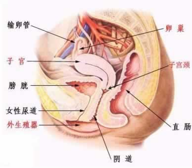

解析子宫前后位与受孕的关系
女性子宫在盆腔内的位置可分为前位子宫、中位子宫和后位子宫。正常情况下子宫为前倾前屈位。

正常的子宫位置效果图
子宫前倾指的是整个宫体向前倾倒；子宫前屈指的是宫体纵轴于宫颈与阴道纵轴相交所夹的角小于90度。此时，宫体在体内的位置较低，所以性生活后，精液容易在这里集中，子宫颈易被精液浸泡，有利于精子穿过宫颈口与卵子相遇而受孕。所以前位子宫受孕的机会多。
子宫前位——整个宫体向前倾倒（虚线所示为正常子宫位）
子宫后位是指女性的子宫的纵轴不变，然而整个子宫向后方倾倒，这样就容易使子宫颈呈一种上翘的状态，即子宫发生了后倾，致使女性的子宫颈不易浸泡在精液中，可能会影响受孕的几率。严重的子宫后位患者还会引起白带过多、小腹疼痛、腰酸背痛、盆腔淤血、月经过多、经血排出困难、肛门坠胀等症状，有些妇女甚至会有房事痛或房事不适。中位子宫的位置则介于前位子宫与后位子宫的位置之间。正常生理情况下的中位子宫多为妊娠子宫。
子宫后位——子宫体向后倒向直肠处（虚线所示为正常子宫位）
对可能由于子宫后倾引起不孕的妇女，同房后可采用头低臀高位，譬如在臀部下方垫置两个枕头，目的使精积聚在阴道后穹窿，从而有利于子宫颈浸泡在精液中；同房时也可采用后俯卧位，使精液向阴道前穹窿部积聚，使上翘的子宫颈容易浸泡在精液中。需指出的是，并非所有的后位子宫都会引起不孕，未孕患者大可不必过于紧张。引起不孕的原因很多，后位子宫只是一个因素，因而对不孕者应全面地检查，明确不孕原因。